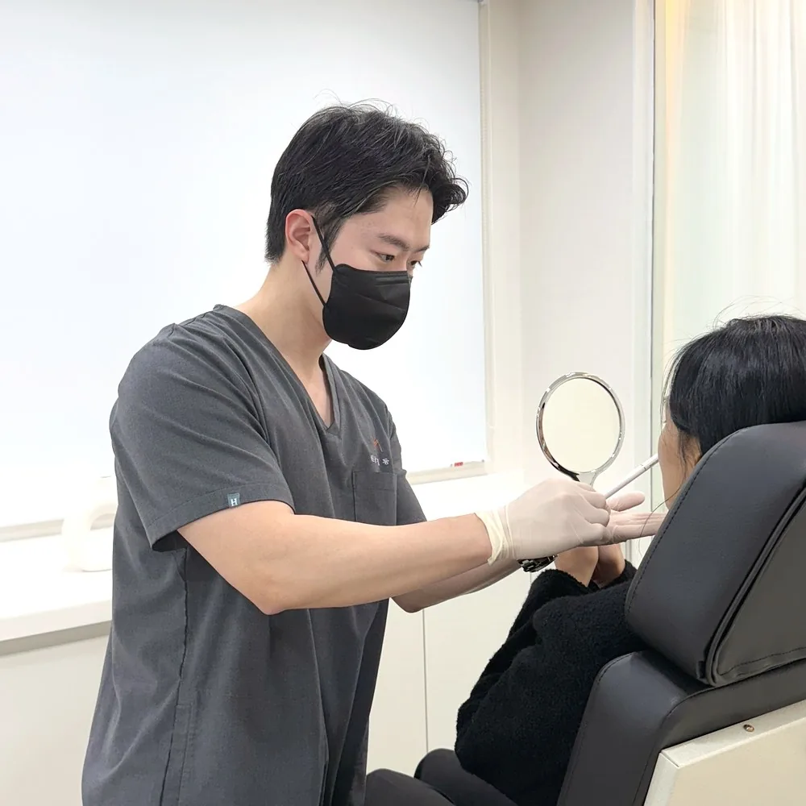
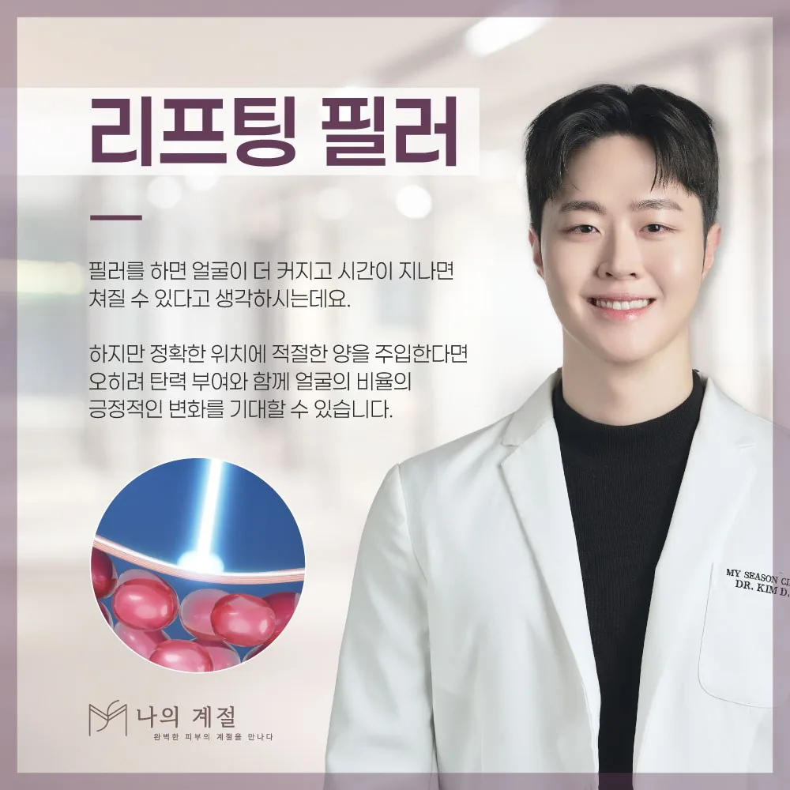
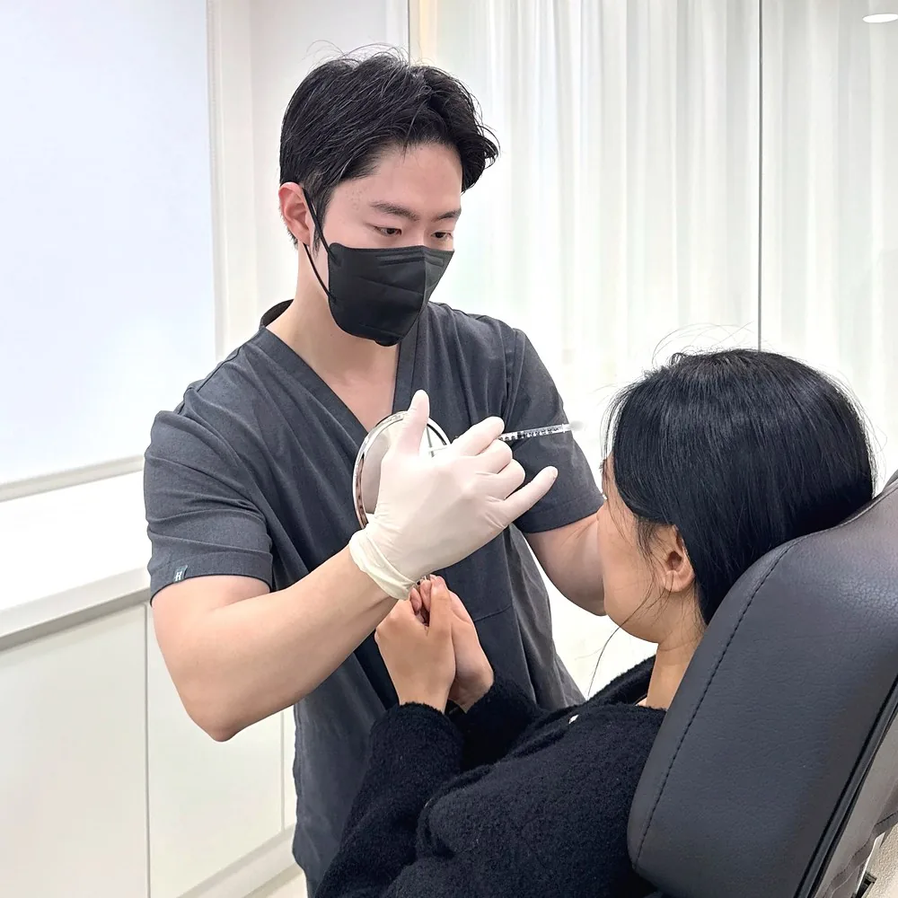
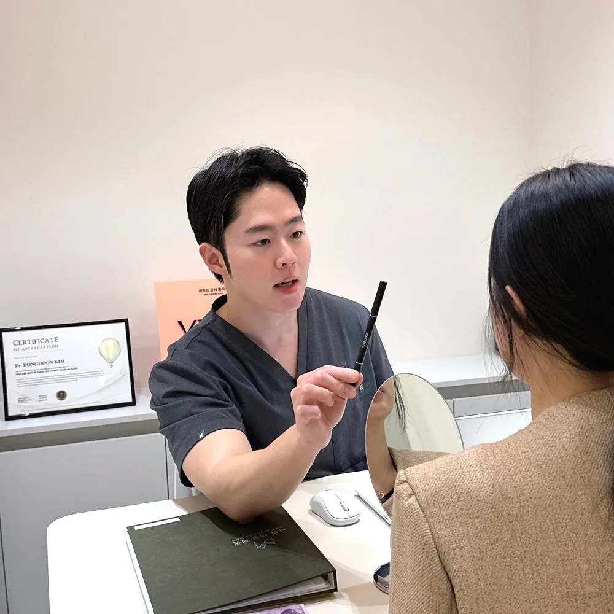
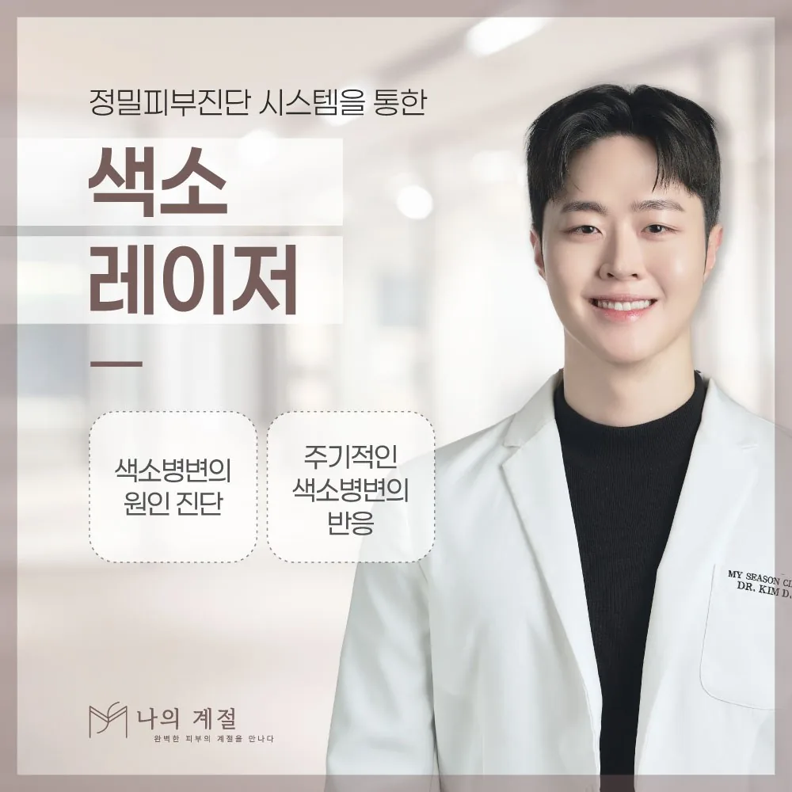
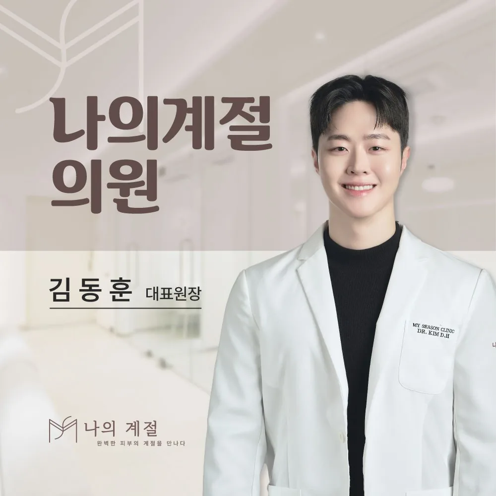

MY SEASON CLINIC · ULSAN
나의계절의원 주요 안내
리프팅·필러·스킨부스터·색소 치료를 상담하기 전에 무엇을 확인해야 하는지 주제별로 정리했습니다. 카드를 누르면 시술 안내와 관련 글로 이동합니다.

울산울쎄라, 피부 깊이별로 달라지는 리프팅 상담
초음파 영상으로 조직을 확인하며 에너지를 전달하는 울쎄라피 프라임의 원리와, 처짐·볼륨·피부결을 구분해 상담 범위를 정하는 기준을 안내합니다.
자세히 보기 →
울산리프팅필러, 채우는 필러와 받쳐 주는 필러의 차이
꺼진 곳을 채우는 목적과 늘어진 조직을 받쳐 올리는 목적은 주입 위치와 제품 선택이 다릅니다. 나의계절 시그니처 리프팅필러 상담 전 확인할 점을 안내합니다.
자세히 보기 →
울산입술필러, 두께보다 비율과 움직임을 먼저 보는 이유
입술은 말하고 웃을 때 가장 많이 움직이는 부위입니다. 윗입술·아랫입술 비율, 테두리, 좌우 균형과 혈관 관련 위험을 함께 확인하는 상담 기준을 안내합니다.
자세히 보기 →
울산이마필러, 높이보다 곡선과 안전 범위를 먼저 보는 이유
이마는 작은 높이 차이도 눈에 띄고, 혈관 구조상 주의가 필요한 부위입니다. 중앙 높이와 옆선, 눈썹 움직임, 기존 시술 이력을 함께 살펴보는 상담 기준을 안내합니다.
자세히 보기 →울산쥬베룩, 당일 볼륨이 아니라 몇 주 뒤의 변화를 보는 시술
PDLLA와 히알루론산을 함유한 쥬베룩은 즉시 채우는 필러와 작용 방식이 다릅니다. 모공·흉터·피부결과 꺼짐을 구분하고, 회차와 경과 확인을 계획하는 기준을 안내합니다.
자세히 보기 →
울산기미레이저, 기미와 잡티를 구분해야 치료 계획이 달라지는 이유
기미, 잡티, 주근깨, 검버섯은 생기는 원인과 깊이가 다릅니다. 정밀 피부 진단으로 색소 종류를 확인하고 장비·출력·횟수·관리 방법을 정하는 기준을 안내합니다.
자세히 보기 →다른 진료 항목도 안내합니다: 울산인모드 안내 ↗ · 울산스킨부스터 안내 ↗
MY SEASON CLINIC · ULSAN
울산피부과, 장비 이름보다 내 피부의 계절을 먼저 살펴볼 때
처짐·볼륨·피부결·색소를 구분해 보는 나의계절의원 상담 안내
얼굴선이 무거워 보이는 고민과 피부가 얇고 잔주름이 늘었다는 고민은 비슷해 보여도 원인이 다를 수 있습니다. 조직의 처짐이 중심인지, 볼륨이 줄어든 것인지, 피부 표면의 탄력과 결이 달라진 것인지에 따라 울쎄라피 프라임 같은 초음파 장비, 리프팅필러, 쥬베룩·스킨부스터 가운데 상담에서 검토하는 방향이 달라집니다.
기미·잡티처럼 색소가 고민이라면 색소의 종류와 깊이를 먼저 구분해야 합니다. 나의계절의원은 상담실장 없이 원장이 직접 진료 상담을 진행한다고 공식 안내하고 있습니다. 유행하는 시술명을 고르기 전에 현재 피부 상태와 기존 시술 이력, 원하는 변화의 범위를 함께 이야기하는 것이 출발점입니다.

Checkpoint 01–04
진료 전 살펴볼 네 가지
처짐·볼륨·피부결을 구분하기
같은 ‘얼굴선 고민’이라도 늘어진 조직, 줄어든 볼륨, 얇아진 피부는 접근이 다릅니다. 가장 불편한 변화가 무엇인지 정면·측면·웃을 때 모습을 함께 보고 나눠 설명합니다.
장비보다 부위와 목적부터
울쎄라·인모드·필러는 작용하는 깊이와 목적이 다릅니다. ‘어떤 장비가 더 센가’보다 제안된 방법이 내 고민의 어느 부분을 다루는지, 제외되는 부위는 어디인지 확인합니다.
기존 시술 이력을 정리하기
이전 필러·실·장비 시술의 부위와 시기, 제품명을 알리면 계획을 세우기 쉽습니다. 겉으로 줄어 보인다고 모두 사라진 것은 아니며, 필러가 있는 부위의 장비 시술은 적용 범위를 따로 확인해야 합니다.
당일 느낌과 경과 평가를 나누기
초음파·콜라겐 자극 시술은 당일 당김이 최종 결과가 아니고, 필러는 직후 부기가 섞여 있습니다. 중요한 일정이 있다면 초기 반응과 이후 평가 시점을 나누어 계획합니다.
Treatment guide
진료 항목 자세히 보기
울쎄라피 프라임 · 초음파로 보는 깊이와 탄력
고강도 집속 초음파(MFU-V)를 피부 아래 특정 깊이에 전달하는 장비 시술입니다. 영상으로 조직층을 확인하며 진행하고, 당일 당김보다 수개월에 걸친 변화를 평가합니다. 깊은 지방을 줄이거나 모든 처짐을 해결하는 방법으로 이해하지 않습니다.
리프팅필러 · 지지 부위와 용량을 함께 계획
광대·관자·턱선 등 얼굴의 지지 구조 가까이에 필러를 두어 처져 보이는 인상을 다루는 접근입니다. 많이 채우는 것이 리프팅은 아니며, 부위별 역할과 이전 시술 이력에 따라 범위가 달라집니다.
입술필러 · 두께와 경계를 함께
입술의 고민은 두께, 테두리, 좌우 균형, 웃을 때의 모양으로 나뉩니다. 하나의 정답 비율에 맞추기보다 인중과 얼굴 전체의 관계, 움직임이 많은 부위라는 점을 고려해 범위를 정합니다.
이마필러 · 곡선과 이전 재료 확인
이마는 표면의 작은 차이도 눈에 띄는 부위이며, 이마·미간은 혈관 관련 합병증에 특히 주의가 필요한 영역입니다. 기존 필러나 제거 이력이 있다면 먼저 조직 상태를 확인합니다.
쥬베룩 · 넓은 음영과 깊은 홈 구분
PDLLA(폴리디락타이드)와 히알루론산을 함유한 주사 제품입니다. 주입 직후 높이에는 수분과 부기가 섞여 있어 당일 부피로 이후 변화를 판단하기 어렵습니다. 넓게 꺼진 면과 좁고 깊은 홈, 처짐으로 생긴 경계를 구분합니다.
기미·색소레이저 · 색소의 종류와 깊이부터
기미는 자외선·호르몬·자극에 따라 다시 짙어질 수 있는 색소이고, 잡티·주근깨·검버섯은 성격이 다릅니다. 진단 뒤 장비와 출력, 회차와 재발 관리 방법을 정하며, 자외선 차단과 생활 관리가 함께 필요합니다.
인모드 · 고주파의 탄력과 윤곽
고주파(RF) 에너지로 피부의 탄력 반응을 유도하는 방식과, 두꺼운 지방층 부위를 다루는 방식이 구분되는 장비 시술입니다. 초음파 장비와 작용 깊이·목적이 다르므로 고민 부위에 따라 선택하며 화상·붉어짐 등 주의사항을 확인합니다.
스킨부스터 · 성분별로 다른 목적
히알루론산, 폴리뉴클레오타이드(PN), PDLLA 등 성분에 따라 목적과 경과가 다른 주사 제품을 통칭합니다. 피부결·수분·탄력·흉터 중 고민을 먼저 나누고, 회차와 이상 반응 확인 계획을 세웁니다.
Before & after
시술 전후 일정 안내
고민과 이력 정리
신경 쓰이는 부위와 유지하고 싶은 특징을 적습니다. 이전 필러·보톡스·실·장비 시술의 부위와 날짜, 복용약을 준비합니다.
피부 평가와 계획 설명
피부 두께·탄력·볼륨·색소 상태를 확인하고 적용 부위·제품·범위·대안·부작용을 설명받습니다. 상담과 시술을 같은 날 해야 하는 것은 아닙니다.
통증 관리와 귀가 안내
적용·제외 부위와 통증 관리 방법, 예상 반응을 확인합니다. 세안·화장·운동·사우나를 피할 기간은 받은 시술에 맞춘 개별 안내를 따릅니다.
피부 반응 관찰
붉어짐·부기·멍·압통 등의 변화를 살핍니다. 심한 통증, 피부가 하얗거나 푸르게 변하는 현상, 시야 이상은 기다리지 말고 즉시 진료받아야 합니다.
경과 재평가
부기와 실제 변화를 구분하고 남은 고민을 확인합니다. 추가·병행 시술은 현재 상태와 이전 반응을 살핀 뒤 결정하며 서두르지 않습니다.
회복과 재진 시점은 시술 종류, 부위와 개인 상태에 따라 달라집니다. 모든 시술에 동일한 며칠·몇 주를 적용하지 않습니다.
Consultation
상담을 준비하는 팁과 질문
- 같은 조명에서 찍은 정면·측면 사진은 고민을 설명하는 데 활용하되, 타인의 사진을 동일한 결과의 기준으로 삼지 않습니다.
- 비용은 장비·제품명과 적용 범위(샷 수·용량·부위), 마취와 경과 확인 진료의 포함 여부를 나누어 설명받습니다.
- ‘어떤 장비가 더 강한가’보다 제안된 방법이 내 고민의 어느 부분을 다루는지 물으면 선택 이유를 이해하기 쉽습니다.
얼굴이 처져 보이면 울쎄라만 받으면 되나요?
처짐의 원인이 피부 탄력 저하인지, 볼륨 감소인지, 지방이나 골격의 변화인지에 따라 접근이 다릅니다. 초음파 장비가 다루는 범위와 한계를 먼저 확인하고, 볼륨이 문제라면 필러 등 다른 선택지도 함께 설명받으세요.
예전에 받은 필러가 있는데 장비 시술을 받을 수 있나요?
제품명과 부위, 시기를 가능한 만큼 알려 주세요. 필러가 남아 있는 부위에 에너지 장비를 적용할지, 범위를 어떻게 정할지는 진료에서 평가합니다.
기미와 잡티는 같은 레이저로 치료하나요?
기미는 햇빛·호르몬·자극에 따라 다시 짙어질 수 있는 색소이고, 잡티·주근깨·검버섯은 성격이 다릅니다. 색소의 종류와 깊이에 따라 장비와 출력, 횟수와 관리 방법이 달라지므로 진단이 먼저입니다.
시술 직후 모양이 마음에 들지 않으면 바로 조정하나요?
초기 부기와 실제 변화를 구분하는 평가가 필요합니다. 다만 심한 통증이나 피부색·시야 변화 등은 모양 평가를 기다릴 문제가 아니므로 즉시 진료가 필요합니다.
Your information
환자가 미리 알려주면 좋은 정보
- 이전 필러·보톡스·실리프팅·장비 시술·수술의 부위와 날짜, 알고 있는 제품·장비명
- 시술 예정 부위의 상처·염증·피부질환·흉터, 켈로이드 체질 여부
- 복용약(특히 이소트레티노인, 혈액 응고에 영향을 주는 약), 알레르기, 임신·수유 여부
- 얼굴 부위 금속·전자기기 삽입 여부, 이전의 강한 통증이나 피부 손상 경험
- 중요한 촬영·행사·치과 치료·운동 일정과 재진이 가능한 일정
Location
나의계절의원 오시는 길
울산광역시 남구 삼산중로 56, 2층 (삼산동)
울산 현대백화점 도보 1분 거리의 삼산동 건물 2층입니다. 네이버 플레이스에서 당일 진료·접수 시간과 임시 휴진을 확인해 주세요. 주차 이용 방법은 예약 시 문의하시기 바랍니다.
Clinic information
병원 안내
나의계절의원은 울산 남구 삼산동, 현대백화점 도보 1분 거리 건물 2층에 있습니다. 공식 소개에 따르면 상담실장 없이 대표원장이 1:1로 진료 상담을 진행합니다. 월·금요일은 20시까지 진료하며 목요일은 휴진입니다. 실제 시술 가능 여부와 사용 제품·장비, 의료진 일정은 예약 시 확인하시기 바랍니다.
- 의료기관
- 나의계절의원 (피부과 · 성형외과)
- 대표원장
- 김동훈
- 대표전화
- 052-276-5500
- 월 · 금
- 10:00–20:00
- 화 · 수
- 10:00–19:00
- 토요일
- 10:00–16:00 (점심시간 없음)
- 평일 점심
- 13:30–14:30
- 휴진
- 목요일 · 일요일 · 공휴일
- 방문 안내
- 임시 휴진·접수 마감 시간은 방문 전 네이버 플레이스 또는 전화로 확인
- 나의계절의원 공식 홈페이지 · 진료시간·의료진 안내
- 나의계절의원 네이버 플레이스
- FDA · 더말 필러(연조직 필러) 환자 안전정보
- 미국피부과학회(AAD) · 비침습 리프팅 시술 안내
의료정보 안내
※ 본 내용은 일반적인 의료정보이며 개인의 진단·처방을 대신하지 않습니다. 시술의 효과와 유지·회복 기간은 개인에 따라 다르고 결과를 보장하지 않습니다. 장비·주사·실 시술 후 통증, 부기, 멍, 붉어짐, 색소 변화, 피부 손상, 감염, 결절 등이 생길 수 있으며, 필러는 드물게 혈관 관련 합병증과 시력 손상 등 중대한 문제가 발생할 수 있습니다. 적용 부위의 국내 허가사항과 부작용, 사후관리는 의료진과 확인하시기 바랍니다.
Budget & planning
리프팅·필러·스킨부스터, 같은 유지 예산으로 묶지 않기
울쎄라피 프라임, 리프팅필러, 쥬베룩은 상담 목표와 시술 구성이 서로 다릅니다. 처음 계획한 시술비와 경과를 보고 추가하는 시술비를 구분하고, 견적을 비교할 때는 같은 구성을 보고 있는지부터 맞춰 보세요. 이 페이지에는 본원의 확정 가격이나 평균 가격을 기재하지 않았습니다.
| 시술 종류 | 비용을 가르는 구성 | 반복 여부 | 이후 비용 |
|---|---|---|---|
| 울쎄라피 프라임 | 적용 부위와 샷(라인) 수 | 개인별 경과 평가 후 결정 | 경과 확인 진료 + 실제 결정된 추가 시술비 |
| 리프팅필러 | 제품명과 용량(cc) | 남은 양·상태 평가 후 결정 | 재진 비용 + 필요 시 추가·조정 시술비 |
| 쥬베룩 · 스킨부스터 | 제품·희석량·부위 | 제품·반응별 결정 | 확정된 회차에 따라 산정 |
| 기미·색소 레이저 | 장비·부위·회차 | 색소 종류와 반응에 따라 | 재발 관리·재진 비용 별도 확인 |
효과의 지속 기간과 다시 시술받아야 하는 시점은 다릅니다. 남아 있는 효과와 부작용, 이전 시술 이력을 평가한 뒤 의료진과 결정하세요. 국내 허가 범위와 개인별 계획은 해외 자료만으로 판단할 수 없습니다.
처음 비용과 이후 비용을 따로 적어 보세요
- 처음: 확정된 적용 부위·구성의 시술비 + 별도인 경우 마취·진정·검사비 + 세금
- 이후: 경과 확인 진료의 비용과, 실제로 결정된 추가 시술비만 합산
- 견적에는 장비·제품명, 샷 수나 용량, 마취·경과 확인 및 세금 포함 여부를 함께 확인하세요.